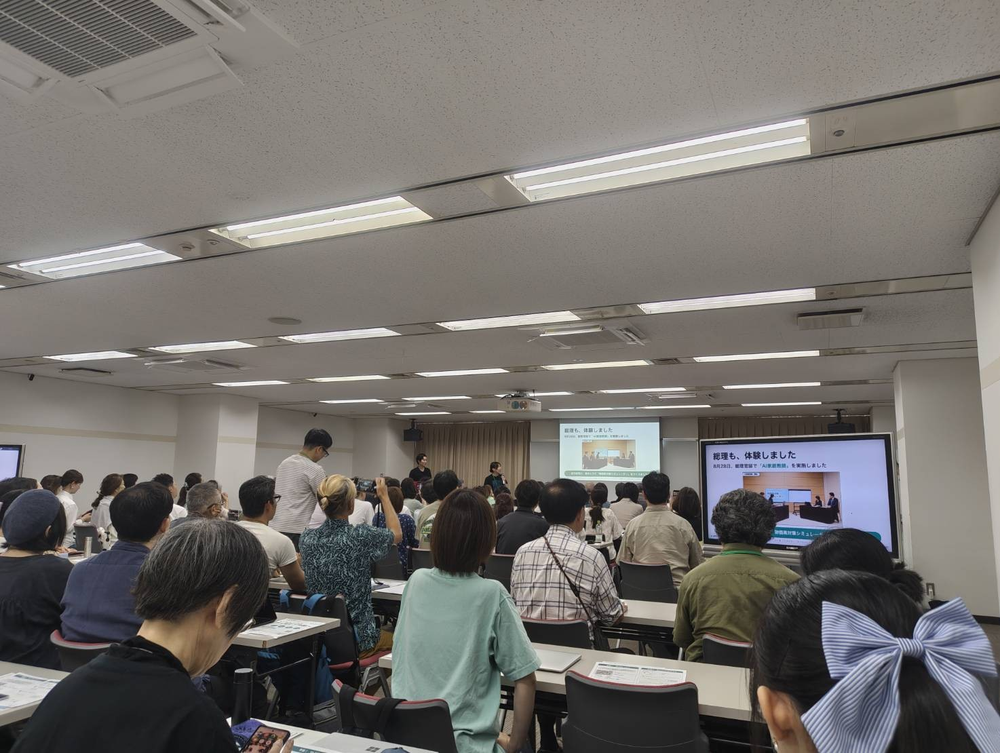
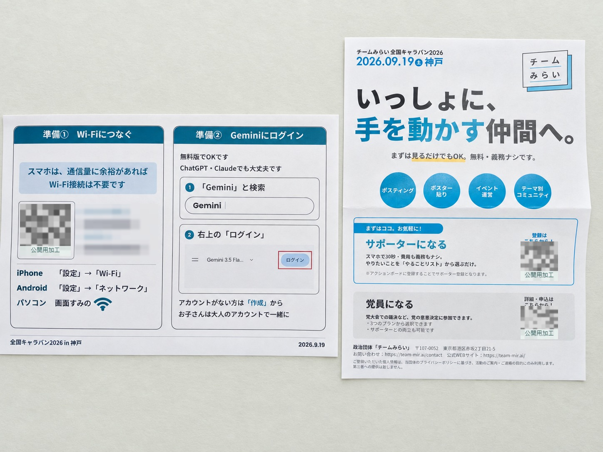
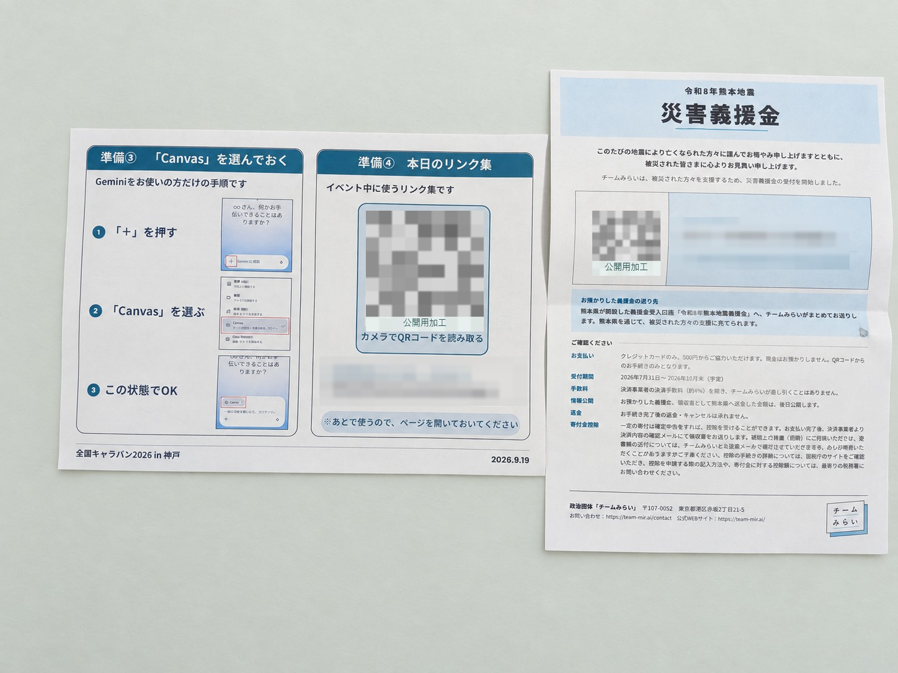

{kind=link}
{kind=link}

01
AIは、どれくらい変わっている？
導入では、AIの能力の変化をグラフで紹介。スライドには「約7か月ごとに、2倍」とあり、METRの研究名が記載されています。
この数値は会場の説明の記録です。「AIのあらゆる性能」が一律に倍増するという意味での検証はしていません。
チームみらい 全国キャラバン2026
2026.09.19 土曜日・神戸
会場に来られなかった方へ。
AIに触れた時間、国会の話、参加者それぞれの気づきを、写真とともにお届けします。

01 / THE DAY
前半は、AIと会話しながらものをつくる体験会。後半は、国会での活動や議員の考えを聞く国政報告会。神戸では、この二つを続けて体験する会が開かれました。
参加者の投稿には、机を並べた会場がほぼ満員だったことや、AIを使った制作、デジタル民主主義への理解を深めたことが記されています。
日時・会場・講師担当は公式開催案内によります。



机に置かれていたもの
AI体験会の準備手順や当日のリンク集、サポーター活動、災害義援金についての案内も配られていました。公開用画像では、現在使われることを避けるため、QRコードと会場の接続情報を隠しています。


背景と影は見やすさのために加工しています。資料部分の内容は当日の記録として掲載しています。
02 / AI WORKSHOP
会場写真のスライドから、AI体験会で紹介された内容をたどります。説明は写真の読取・要約です。
01
導入では、AIの能力の変化をグラフで紹介。スライドには「約7か月ごとに、2倍」とあり、METRの研究名が記載されています。
この数値は会場の説明の記録です。「AIのあらゆる性能」が一律に倍増するという意味での検証はしていません。

02
次のスライドは、AIによる変化を新しい「産業革命」と表現。働き方、調べたり練習したりする方法、そして自分の欲しい道具をつくることを挙げていました。
専門家だけの話ではなく、自分の生活とつなげて考えるための導入として読めます。

03
制作中のスライドには「うまくいかない＝チャンス！」という言葉。やりたいことを言葉にし直すためのコツが並んでいました。
猫柄毛布さんの投稿 / AIインタビューと音声入力
03 / VOICES & NOTES
machine⿻さんの投稿 / 他党との関係
堀場さんもスタッフとして来場し、会場運営に携わっていました。
ふみちさんによる当日の参加記録です。参加人数などの数値は投稿者の記述としてご覧ください。
チームみらいの全国キャラバンの神戸に参加しました。
参加者が140人だったよう😳 武藤さんは開始まで。
小林さん、宇佐美さんは途中まで。
メインは安野さんと峰島さん。
堀場さんもいた。 お手伝いも含めてめっちゃ楽しかった！
初のバイブコーディングでのアプリも無事に出来ました。
面白かったので、2つ作った😊 お人柄が皆さん素敵です。
slidoにて質問して、それに答えるって形式がいつも良いなと思う。
AIインタビューを体験してもらうのも良かったな。
1つ答えたら的確に返信が返ってきて、また質問に答えて・・・と繰り返す体験が面白いようで近くの方が盛り上がってた✨
個人的に、議員の辻立ちや祭りに参加することに意味を見いだせない人間なので、
これからもみらいにはこういう活動をしてほしいなと思う。
帰りに元町の播磨屋に寄ろうかなと思ったけど、品薄かもと思い止めたら、やっぱり売り切れになったよう。
そうだよね…
04 / SOURCES
参加者が撮影した会場写真と、掲載許可を得た参加者投稿をもとにした非公式のイベント記録です。政党の公式レポート・議事録ではありません。
出典確認・編集日：2026年9月20日。本文と写真はXへのログインなしで読めます。リンク先のSNSではログインを求められる場合があります。